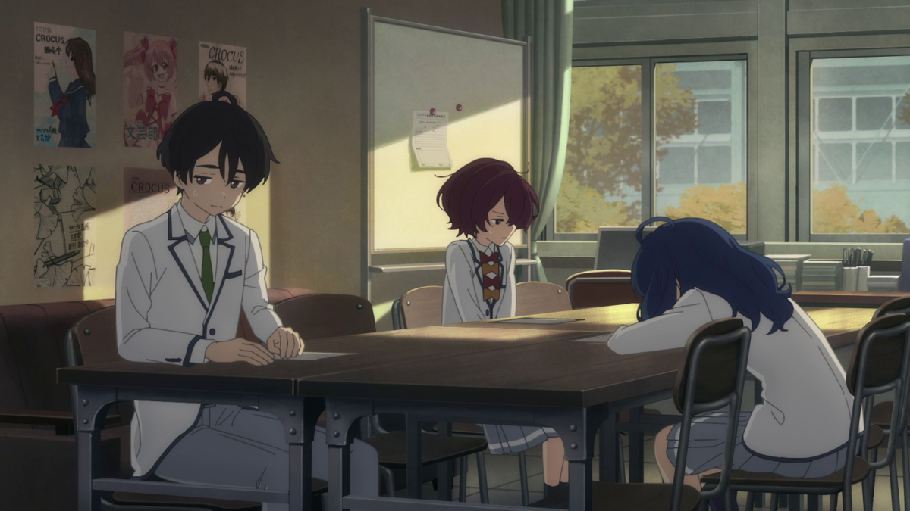

漢字辞典
Cari kanji lewat ketikan, level JLPT, atau tulis langsung dengan jarimu. Lengkap dengan arti, cara baca, contoh kata, dan animasi urutan goresan.
KAMUS KANJI
Ketik romaji, kana, kanji, atau arti dalam bahasa inggris. Bisa juga telusuri per level JLPT, atau gambar kanjinya langsung.
Coba:
Memuat data kanji…
TULIS KANJI
Pakai jari atau mouse. Tulis sesuai urutan goresan; tiga kanji paling mirip muncul otomatis setelah kamu berhenti menulis.
Sumber data: daftar kanji & level JLPT dari kanji-data (berbasis KANJIDIC2 / EDRDG, CC BY-SA 4.0); urutan goresan dari KanjiVG (CC BY-SA 3.0, © Ulrich Apel); contoh kata (JMdict) via kanjiapi.dev; pengenalan tulisan tangan oleh Google Input Tools; terjemahan Indonesia otomatis oleh MyMemory. Terjemahan otomatis bisa kurang tepat, jadi cek arti Inggrisnya juga.